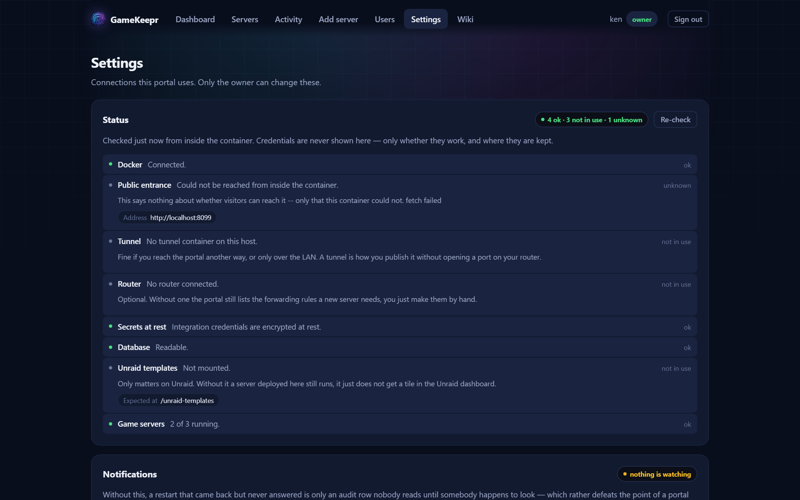

Users, access and integrations

Accounts
Users page → add a user with a role (see Roles and permissions). The new account gets a one-time password to hand over on any channel you like — it must be replaced at first sign-in and can do nothing until then. From the same page: reset passwords, disable accounts, change roles, delete.
Per-server exceptions live behind each user's Access… button: make someone operator of one server, member on one, or hide a server from them entirely. The rule is the role; the row is the exception.
Sessions
The Users page shows who is signed in right now, from which browser, and lets you end sessions. Role changes and disables take effect on the next request — no waiting for a session to expire.
The outer door: Cloudflare Access
When the portal is published through Cloudflare Access, GameKeepr can manage the guest list itself: Settings → Access shows the emails on the policy, and adding a friend is one field instead of a trip to the Cloudflare dashboard. Two doors stay deliberately separate — removing someone from Access keeps them out entirely; removing their GameKeepr account keeps them signed out of the portal.
Notifications
Settings → Notifications takes a Discord webhook. What gets announced: deliberate actions (restarts, starts, stops, deploys, mod installs — with who did it), and the watcher's findings (a server that stopped without anyone asking, and its recovery). Every embed carries the game's artwork and one colour per kind of news.
Malware scanners
Settings → Malware scanning, both optional: a VirusTotal key (lookups by hash — the file itself never leaves the machine) and/or a ClamAV daemon you run yourself. With neither configured, mod reports say "no scanner is configured" — never "clean".
Steam game server tokens
Settings → Steam takes a Steam Web API key (steamcommunity.com/dev/apikey; the account must not be limited). With it, the portal mints and retires Steam's game server login tokens itself — the tokens some dedicated servers (CS2 among them) must present to register with Steam. This is groundwork for the tournaments feature, where every match gets its own short-lived server and nobody should be minting tokens by hand on a Steam web page first. The key is checked against Steam before it is stored, never echoed back, and encrypted at rest like every other integration secret.
The router
Settings → Router connects your router, after which the per-server Network tab can create port forwards instead of only listing what is missing — and deploys open their game ports automatically. Pick the vendor from the dropdown:
- UniFi (Dream Machine, Cloud Key, controller) — API key; the TLS certificate is pinned on first contact. The battle-tested one.
- Fritz!Box — TR-064 with a Fritz!Box user and password; switch on "Allow access for applications" in the Fritz!Box home network settings.
- MikroTik (RouterOS 7) — REST API with user and password; certificate pinned on first contact like UniFi.
- UPnP — most consumer routers (TP-Link, Netgear, ASUS, many ISP boxes) with UPnP enabled; just the router's address, no login.
Honesty note: UniFi runs in production; the other three are written to their vendors' published APIs and await real-hardware confirmation — a connect always performs a real test call, so a problem shows up when you connect, never silently later. Reports welcome on the forum thread.
Without any router connected, the Network tab still proves reachability by asking the game itself through the public address, and says which ports to forward by hand.
All stored integration secrets are encrypted at rest with SESSION_SECRET.